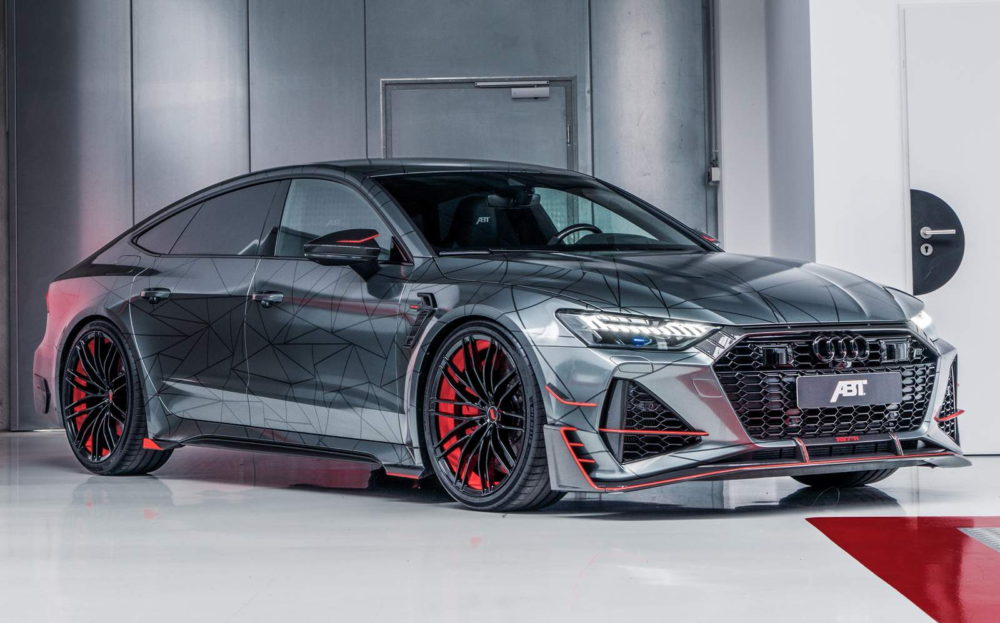
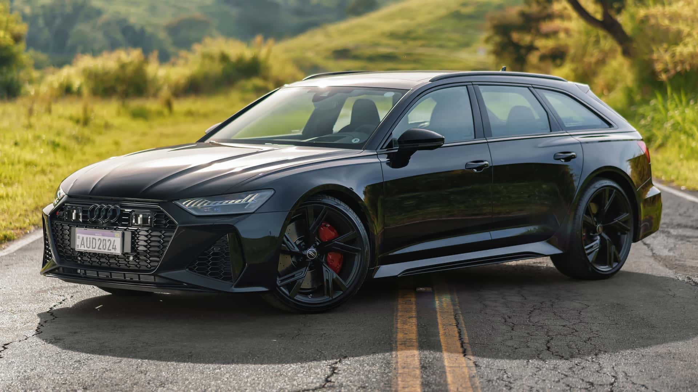

Audi Anuncia Mudança na Nomenclatura dos Modelos RS: RS6 Passa a Ser RS7 e Outras Reformulações
Alemão da Caravan
Publicada em: 05/06/2025
A Audi surpreendeu o mercado automotivo ao anunciar uma reformulação na nomenclatura de seus modelos esportivos da linha RS. A partir de 2025, o icônico Audi RS6 Avant, tradicional perua esportiva da marca, passará a ser chamado de RS7, alinhando-se a uma nova estratégia global da montadora para simplificar e unificar a identidade de seus veículos de alta performance.
Motivos por Trás da Mudança
Segundo a Audi, a alteração visa facilitar o posicionamento dos modelos RS no mercado, criando uma hierarquia mais clara e coerente com a linha principal de sedãs e SUVs. Com a crescente popularidade dos modelos RS7 Sportback e RS Q8, a marca decidiu consolidar seus esportivos sob nomes que reflitam melhor o segmento e o estilo de carroceria.
Além disso, a mudança acompanha a tendência do setor automotivo de simplificar nomes para facilitar a comunicação com o consumidor final, especialmente em mercados globais. A Audi pretende que os nomes dos modelos transmitam imediatamente a proposta e o porte do veículo, evitando confusões.

O Que Muda na Prática?
Audi RS6 Avant passa a ser RS7 Avant: A perua esportiva manterá suas características técnicas e desempenho, mas adotará o nome RS7 para reforçar sua conexão com o sedã RS7 Sportback, que compartilha plataforma e motorização. Outros modelos RS também terão ajustes: Modelos como o RS Q5 podem passar a ser RS Q6, e o RS3 poderá ser renomeado para RS4 em algumas regiões, conforme a estratégia da Audi para harmonizar a linha. Tecnologia e desempenho permanecem inalterados: A mudança é exclusivamente de nomenclatura, sem impacto direto nas especificações técnicas, equipamentos ou preços dos veículos.